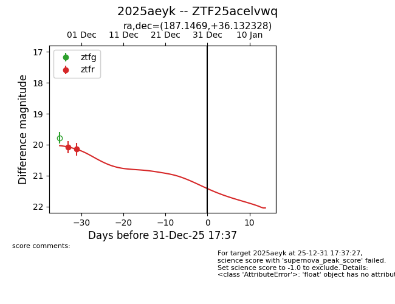
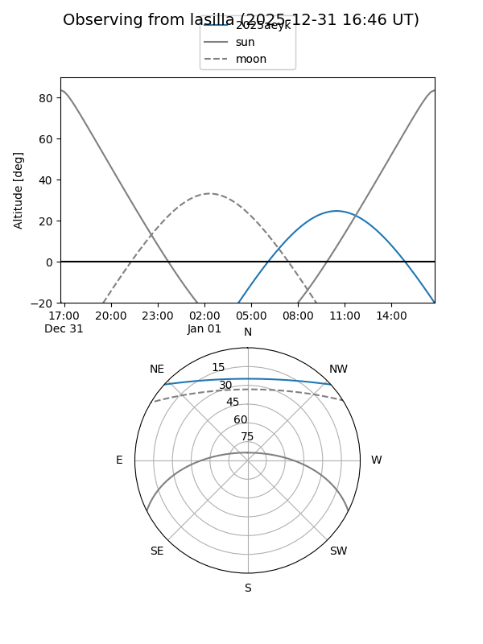
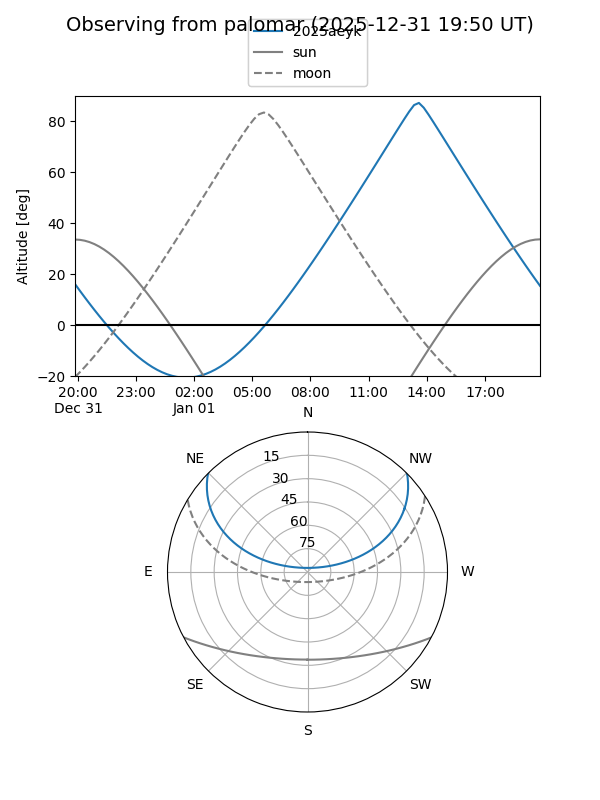
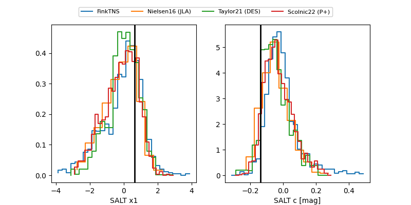

2025aeyk
Target 2025aeyk at 2025-12-31 16:59
Aliases and brokers:
FINK:
Lasair:
ALeRCE:
TNS:
YSE:
alt names
ZTF25acelvwq (ztf,fink_ztf)
2025aeyk (tns,yse)
Coordinates:
equatorial (ra, dec) = 187.1469,+36.13233
equatorial (HMS+DMS) = 12:28:35.25,+36:07:56.38
galactic (l, b) = (149.8509,+79.77150)
Flags:
Photometry:
last ztfr=20.15
2 ztfr detections
Lightcurve

Visibility


Additional plots
